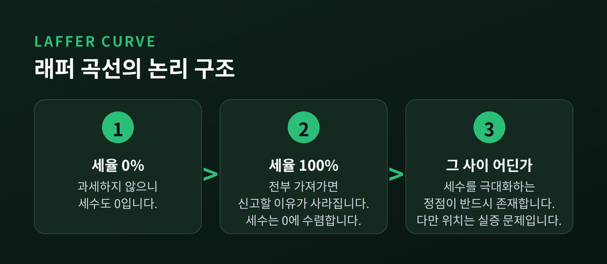
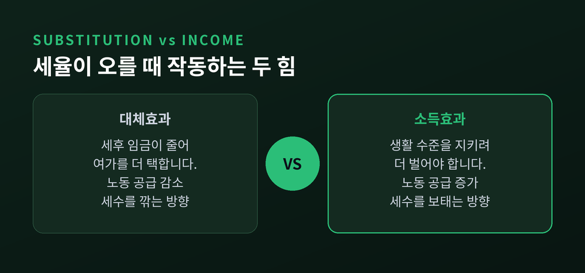
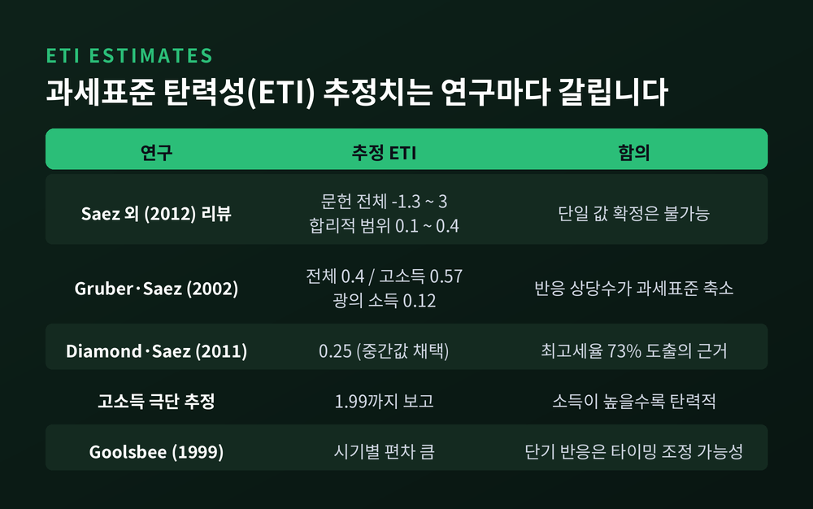
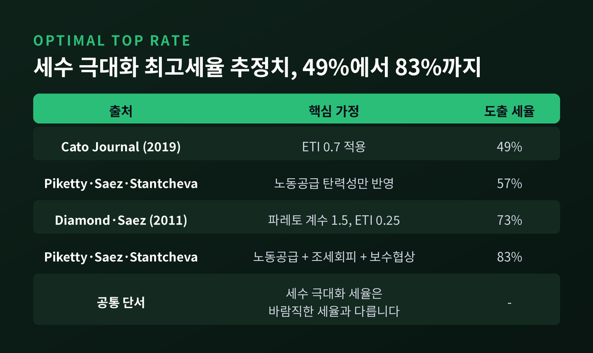
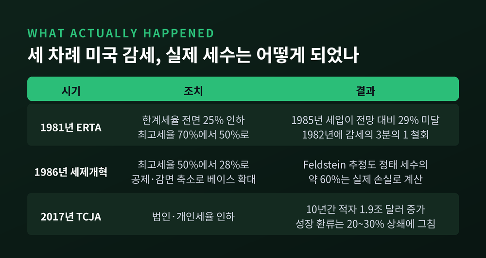
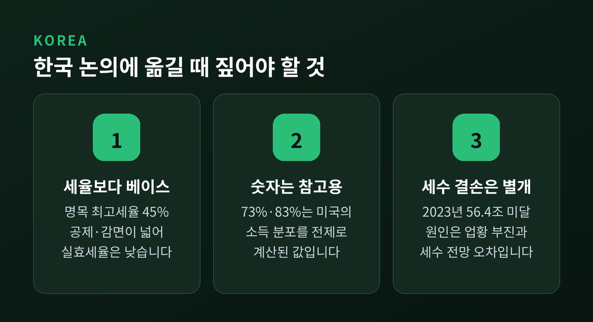

이번 글에서는 래퍼 곡선과 최적 조세율을 정리해 보겠습니다. 세율을 올리면 세수가 어디서부터 줄어드는지, 그 지점을 실증 연구가 어떻게 추정해 왔는지를 살펴봅니다. 정치적으로 뜨거운 주제인 만큼, 어느 한쪽 손을 들어주지 않고 양쪽 근거를 나란히 놓겠습니다.
세 줄 요약
1974년 워싱턴 D.C.의 한 레스토랑에서 경제학자 아서 래퍼가 냅킨에 곡선 하나를 그렸습니다. 자리에는 저널리스트 주드 워니스키와 당시 포드 행정부 인사였던 딕 체니, 도널드 럼즈펠드가 함께 있었습니다.
냅킨에 적힌 취지는 단순합니다. 어떤 것에 세금을 매기면 그것이 줄어들고, 보조금을 주면 늘어난다는 것입니다.
한 가지 사족을 덧붙이자면, 스미스소니언에 전시된 그 냅킨은 원본이 아닐 가능성이 큽니다. 원본은 종이였는데 전시품은 천이고, 적힌 날짜도 참석자들의 기억과 어긋납니다. 래퍼 본인도 훗날 만든 기념품일 것이라고 말했습니다.
아이디어 자체는 훨씬 오래되었습니다. 세율을 낮추면 세수가 늘 수 있다는 미국 내 논쟁은 래퍼 이전으로도 수십 년을 거슬러 올라갑니다.
래퍼 곡선의 논리는 의외로 간단합니다. 두 개의 확실한 점에서 출발합니다.
세율이 0%면 세수는 0입니다. 과세하지 않으니 당연합니다.
세율이 100%여도 세수는 0에 수렴합니다. 번 것을 전부 가져가면 과세 대상 활동을 신고할 이유가 사라지기 때문입니다.
두 끝 사이에서 세수는 양수입니다. 그러므로 그 사이 어딘가에 세수를 가장 크게 만드는 세율이 존재합니다. 그 지점을 넘어선 구간이라면, 세율을 내려도 세수가 늘 수 있습니다.
여기까지가 순수한 논리입니다. 그런데 이 논증이 보장하는 것은 딱 하나, "정점이 존재한다"는 사실뿐입니다.
정점이 몇 퍼센트인지, 지금 우리가 그 왼쪽에 있는지 오른쪽에 있는지는 논리가 답해 주지 않습니다. 곡선이 좌우대칭인 포물선이어야 할 이유도 없습니다. 정점의 위치는 오직 하나에 달려 있습니다. 사람들이 세율 변화에 얼마나 민감하게 반응하느냐입니다.

세율이 오르면 개인은 서로 반대되는 두 힘을 함께 받습니다.
첫째는 대체효과입니다. 세율이 오르면 한 시간 더 일해서 손에 남는 돈이 줄어듭니다. 노동의 상대가격이 떨어지니 여가를 더 택하게 됩니다. 노동 공급이 줄고, 세수는 깎입니다.
둘째는 소득효과입니다. 세율이 오르면 같은 생활 수준을 유지하기 위해 더 벌어야 합니다. 목표 소득을 맞추려고 오히려 더 일하게 됩니다. 노동 공급이 늘고, 세수는 보태집니다.
두 힘의 방향이 반대이므로, 어느 쪽이 큰지는 이론만으로 정할 수 없습니다. 래퍼 곡선이 오른쪽으로 넘어가려면 대체효과가 소득효과를 압도할 만큼 커야 합니다.
한 가지 더 짚어야 할 것이 있습니다. 세수에 영향을 주는 반응은 실제 노동 공급 변화만이 아니라는 점입니다.

현대 재정학은 이 문제를 과세표준 탄력성이라는 하나의 지표로 다룹니다. 영어로는 elasticity of taxable income, 줄여서 ETI라고 부릅니다.
정의는 이렇습니다. 세후 소득 유보율이 1% 변할 때 신고된 과세표준이 몇 % 변하는가입니다. ETI가 0.25라면, 세후 유보율이 10% 오를 때 과세표준이 2.5% 늘어난다는 뜻입니다. 이 값이 클수록 사람들이 세율에 민감하다는 의미이고, 래퍼 곡선의 정점은 그만큼 낮아집니다.
주의할 점은 ETI가 노동 공급만 잡아내는 지표가 아니라는 것입니다. Saez, Slemrod, Giertz의 2012년 문헌 리뷰는 ETI가 세 가지 반응의 합이라고 정리합니다. 실제로 덜 일하는 실질 반응, 소득의 형태와 시점을 바꾸는 조세 회피, 그리고 아예 신고하지 않는 조세 포탈입니다.
이 구성이 왜 중요할까요. 뒤의 두 가지는 세제 설계와 집행으로 줄일 수 있기 때문입니다.
Slemrod와 Kopczuk은 여기서 한 걸음 더 나아갑니다. ETI는 불변의 자연상수가 아니라, 정부가 과세 베이스와 집행 강도를 통해 어느 정도 선택할 수 있는 값이라는 것입니다. 공제와 감면을 넓게 열어두면 ETI가 커져 정점이 낮아집니다. 베이스를 넓히고 집행을 조이면 정점은 올라갑니다.
그렇다면 질문의 형태가 바뀝니다. "세율 몇 퍼센트가 옳은가"에서 "과세 베이스를 어떻게 짤 것인가"로 옮겨 가는 셈입니다.

여기서부터가 본격적인 논쟁입니다. 자주 인용되는 공식은 이렇게 생겼습니다. 세수 극대화 최고세율은 1을 (1 + 파레토 계수 × ETI)로 나눈 값입니다.
Diamond와 Saez는 2011년 논문에서 파레토 계수를 1.5, ETI를 0.25로 놓고 73%라는 숫자를 얻었습니다. 이 73%가 언론에 가장 널리 퍼진 수치입니다.
Piketty, Saez, Stantcheva는 2014년 논문에서 세 개의 탄력성을 구분했습니다. 노동 공급, 조세 회피, 그리고 보수 협상입니다. 노동 공급 반응만 반영하면 57%가 나오고, 세 가지를 모두 넣으면 83%까지 올라갑니다.
반대편도 같은 공식을 씁니다. Cato Journal에 실린 비판 논문은 ETI를 0.7로 놓으면 같은 계산에서 49%가 나온다고 지적합니다. 0.25라는 중간값이 문헌에서 자연스럽게 도출된 값이 아니라 주관적으로 설정된 범위의 산물이라는 것입니다. 실제로 문헌 전체의 추정치 범위는 마이너스 1.3부터 3까지 벌어져 있습니다.
여기서 반드시 짚어야 할 오해가 두 가지 있습니다.
하나. Diamond와 Saez의 73%는 연방 소득세율이 아닙니다. 연방과 주와 지방을 합치고 급여세와 판매세까지 포함한 통합 한계세율을 가리킵니다. 연방 소득세만 73%로 올리자는 주장이 아닙니다.
둘. 세수 극대화 세율은 바람직한 세율과 다릅니다. 세수만 최대화한 지점은 이미 경제적 초과부담이 상당히 커진 상태일 수 있습니다.
거시 모형으로 접근한 연구도 있습니다. Trabandt와 Uhlig는 미국과 EU-14가 노동세 래퍼 곡선의 정점 근처에 있지만 아직 넘지는 않았다고 추정했습니다. 미국은 노동세율을 더 올리면 노동세수를 최대 30%, 자본세수를 최대 6% 더 걷을 수 있다는 계산입니다. EU-14는 각각 8%와 1%에 그칩니다. 유럽이 정점에 훨씬 가깝다는 뜻입니다.

이론은 여기까지입니다. 실제 데이터를 보겠습니다.
1981년 미국의 경제회복조세법은 개인 한계세율을 3년에 걸쳐 전면 25% 인하했습니다. 최고세율은 70%에서 50%로 내려갔습니다. 세율 구간의 물가연동도 이때 도입되었습니다.
결과는 세수 증가가 아니었습니다. CBO가 1985년에 수행한 사후 분석에서, 1985년 실제 세입은 1981년 시점의 전망보다 2,980억 달러, 비율로는 29% 낮았습니다. 재무부 사후 추정으로도 시행 초기 몇 년간 연방 세입이 약 9% 줄었습니다. 세수 손실이 커지자 1982년에 여야가 합의해 1981년 감세의 약 3분의 1을 되돌렸습니다.
다만 해석에는 신중해야 합니다. 1981년과 1982년에는 예상치 못한 경기 침체와 급격한 물가 하락이 겹쳤습니다. 세수 감소를 전부 감세 탓으로 돌릴 수는 없습니다. 반대로 감세가 세수를 늘렸다는 증거도 나오지 않았습니다.
1986년 세제개혁은 성격이 달랐습니다. 최고세율을 50%에서 28%로 크게 낮추면서도, 각종 공제와 감면을 대거 없애 과세 베이스를 넓혔습니다. 설계상 세수 중립이 목표였습니다. 개인 부문에서 5년간 약 1,200억 달러를 깎고, 법인 부문에서 같은 규모를 늘려 상쇄하는 구조였습니다.
이 개혁을 두고 Feldstein은 개혁 전 50% 구간에 있던 사람들의 소득이 유의하게 늘었다고 분석했습니다. 그러나 그의 추정조차 감세가 스스로 재원을 조달한다고 말하지 않습니다. 한계세율을 전면 10% 내리면 정태적 추정 대비 약 60%의 세수를 잃을 것으로 보았습니다. 40%는 행태 반응으로 회수되지만, 60%는 실제 손실이라는 뜻입니다.
반론도 만만치 않습니다. 고소득자 신고소득이 늘어난 것의 상당 부분이 실제 생산 증가가 아니라 소득 형태 전환이었다는 지적입니다. 법인에 쌓아두던 소득이 개인 신고소득으로 옮겨 오면 통계상 개인 소득은 늘지만 사회 전체 산출이 늘어난 것은 아닙니다.
이 의심을 뒷받침하는 숫자가 있습니다. Gruber와 Saez의 추정에서 과세표준 탄력성은 0.4인데, 공제 이전의 광의 소득 탄력성은 0.12에 그칩니다. 반응의 상당 부분이 "덜 버는 것"이 아니라 "과세표준을 줄이는 것"임을 시사합니다.
2017년 감세도 결과가 비슷했습니다. CBO는 2018년부터 2028년까지 재정적자가 1.9조 달러 늘어날 것으로 추정했습니다. 성장에 따른 세수 환류는 적자 증가분의 약 30%를 상쇄했고, 이자비용까지 반영하면 약 20%에 그쳤습니다. Tax Policy Center와 펜-와튼 모형은 7%에서 19%로 더 낮게 보았고, Tax Foundation은 약 70%로 가장 높게 보았습니다. 추정 폭은 넓지만, 감세가 스스로 재원을 조달한다는 결론에 도달한 모형은 없었습니다.

주류 경제학의 답은 비교적 분명합니다.
시카고대 IGM 경제전문가 패널에 이런 문항이 제시된 적이 있습니다. 지금 미국에서 연방 소득세율을 인하하면 과세표준이 충분히 늘어 5년 안에 연간 총 세수가 오히려 높아질 것이라는 진술입니다.
동의한 패널은 한 명도 없었습니다. 40명 중 28명이 반대하거나 강하게 반대했습니다.
여기서 오해를 정리해 둘 필요가 있습니다. 주류 경제학이 부정하는 것은 래퍼 곡선의 존재가 아닙니다. 곡선이 있다는 데는 이견이 거의 없습니다. 논쟁은 오직 하나입니다.
"우리는 지금 곡선의 어디쯤 서 있는가."
다수 견해는 주요 선진국이 아직 정점의 왼쪽, 즉 세율을 올리면 세수도 오르는 구간에 있다는 것입니다. 다만 세목별로 사정이 다릅니다. 자본소득세와 법인세는 노동세보다 정점이 낮습니다. 자본이 국경을 넘기 쉽기 때문입니다. 미국 일부 주 차원에서는 이미 정점을 넘었다는 주장도 나와 있습니다.
하우저의 법칙이라는 경험칙도 종종 인용됩니다. 최고 한계세율이 28%에서 91%까지 널뛰었는데도 미국 연방 세입은 GDP 대비 대체로 일정했다는 관찰입니다. 1946년부터 2007년까지 평균 약 17.9%, 범위는 14.4%에서 20.9%였습니다. 다만 이 관찰은 경기 순환과 베이스 변화, 다른 세목의 조정이 뒤섞인 결과이므로 인과관계로 읽어서는 곤란합니다. 확정된 법칙이 아닙니다.
한국의 현재 위치부터 확인하겠습니다.
개인 소득세 최고세율은 45%입니다. 지방소득세를 포함하면 49.5%입니다. 법인세는 2026년부터 각 구간이 1%p씩 올라, 과세표준 2억 원 이하 10%, 200억 원 이하 20%, 3,000억 원 이하 22%, 그 초과분은 25%가 적용됩니다.
조세부담률은 2024년 기준 17.8%였습니다. 정부는 2026년 18.7%에서 2029년 19.1%로 완만히 오를 것으로 전망하고 있습니다. OECD 평균보다는 낮은 수준이라는 평가가 다수입니다.
주목할 지점은 명목세율과 실효세율의 괴리입니다. 언론이 인용한 자료에 따르면 2022년 기준 한국의 개인소득세 명목 최고세율은 OECD 38개국 중 6위권이지만, 공제와 감면을 반영한 실효세율 순위는 30위권으로 내려앉습니다. 이 수치는 원 통계를 다시 확인할 필요가 있습니다만, 방향만큼은 앞서 본 ETI 논의와 정확히 맞물립니다.
즉 한국에서 던져야 할 질문은 "세율이 정점을 넘었는가"보다 "과세 베이스가 얼마나 좁은가"에 가깝습니다.
최근의 세수 결손도 함께 짚겠습니다. 2023년 국세수입은 본예산 대비 56.4조 원 미달했습니다. 2024년에는 336.5조 원이 걷혀 본예산 367.3조 원에 30.8조 원 못 미쳤습니다.
이 결손을 래퍼 곡선 효과의 증거로 인용하는 것은 무리입니다. 국회예산정책처와 KDI가 제시한 주된 설명은 반도체 업황 침체에 따른 법인세 감소와 부동산 거래 부진에 따른 자산 관련 세수 부진, 그리고 세수 전망 자체의 오차입니다. 세율 변화가 아니라 경기와 업황의 문제라는 뜻입니다.
미국 연구의 숫자를 한국에 그대로 옮겨 붙일 수도 없습니다. 73%나 83% 같은 값은 미국의 소득 분포, 급여세 구조, 사회보험료 부담을 전제로 계산된 것입니다. 한국은 소규모 개방경제이므로 자본과 고숙련 인력의 이동성이 크고, 그만큼 자본세와 법인세의 정점은 더 낮게 잡히는 것이 자연스럽습니다. 한국을 대상으로 한 신뢰할 만한 ETI 추정치는 이번에 확인하지 못했습니다. 이 부분은 솔직히 비워 두겠습니다.

정리하면 이렇습니다.
래퍼 곡선은 틀린 이론이 아닙니다. 다만 그것이 증명하는 범위가 아주 좁을 뿐입니다. 정점이 존재한다는 사실과, 우리가 그 정점을 넘었다는 주장은 전혀 다른 층위의 이야기입니다.
예전에는 이 논쟁이 "세율을 올릴 것인가 내릴 것인가"의 이분법으로 다뤄졌습니다. 지금은 무게중심이 옮겨 갔습니다. 탄력성 자체가 세제 설계로 바뀌는 값이라면, 결국 승부는 세율이 아니라 베이스에서 갈립니다.
숫자를 대할 때는 출처와 가정을 함께 봐야 합니다. 같은 공식에서 49%와 83%가 동시에 나오는 이유는, 계산이 틀려서가 아니라 넣은 가정이 다르기 때문입니다.
세율을 올리면 세수는 언제부터 줄어드느냐고 물으신다면, 정직한 답은 이렇습니다 — 그 지점은 자연이 정해 준 상수가 아니라, 우리가 세제를 어떻게 설계하느냐에 따라 움직이는 값입니다.